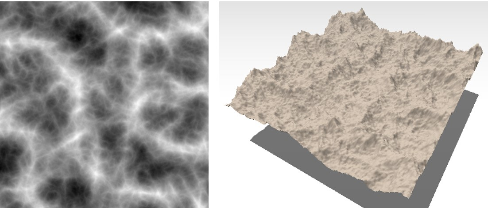

Using Noise for Terrain Generation
Noise is a powerful tool that has been applied in many (if not all) subdomains of Computer Graphics. Terrain generation is no exception. In fact, using noise to generate mountains was one of the first application, going back as far as the late eighties with the seminal work of Kenton Musgrave.
For terrains, the core idea is to use the scalar value returned by the noise as the altitude at a given point. You can think of this as a world-space plane, with the elevation of points defined by the noise function. Below is an example of the same noise rendered on a 2D texture and on a 3D mesh.

Now let's see how to do that in practice.
Note
If you want to dig into the details of how noise functions work, please refer to this page.
Our first noise-based terrain
Noise functions are simply dependent on the position at which they are evaluated - they thus belong to the category of procedural functions, as they are no or very few data and instead rely on a procedure to compute a scalar value. If we extend our ProceduralHeightField class introduced in the previous part, we can now define the Elevation function again using our Perlin noise:
class ProceduralHeightField extends BaseHeightField {
constructor(horizontalExtents, verticalExtents) {
super(horizontalExtents, verticalExtents);
}
// Compute the altitude of a 2D point procedurally using Perlin noise
Elevation(p) {
return perlin.noise(x, y, 0.0);
}
}
This gives us the following result. Use the mouse to turn around it!
Tip
For the noise function itself, we use Three.js Perlin noise implementation, which was itself used to showcase a procedural terrain here with the code here.
At this point you may not really believe that noise function can be used to create realistic (or at least, visually appealing) terrains. You can play around with the amplitude, frequency, and number of octaves in the example above and will probably improve the results quite a lot. However, noise-based terrains still have several limitations.
The issues of Noise
Creating terrains using this kind of fractal noise has been done extensively in video games for multiple decades. While you can definitely get a mountainous look for your terrain, getting a proper valley for instance might be more difficult, or even impossible if you're limited to simple, uniform fractal noise. If we were to list all the limitations of the above example, it would look like this:
-
No valleys: you either get a very mountainous terrain or a very flat terrain, but having a mix of both is difficult.
-
You may notice the same kinds of pattern everywhere. This is one interesting property of noise function: self-similarity. In our case, it's also a limitation.
-
Mountains are only just isolated peaks, lacking ridge structures typically found in real mountain ranges.
In the end, it seems that noise is only capable of generating small bumps. Can we alleviate this issue somehow?
Multifractals
Some of these problems can be partially solved by using a more advanced technique called a multifractal noise. The core idea is to modulate the amplitude of successive octave based on previous iterations. This way, areas with a low amplitude will never get too spiky, but instead remain relatively flat, and the opposite will happen for mountainous areas. The example below shows different types of noise for generating terrain shapes, including classical perlin and ridge noise, as well as their multifractal variants. Play around with the different settings to get a feel of how noise behaves.
Multifractals still do not solve everything. However, the idea of using procedural functions to generate shapes is interesting and can be pushed further: what if we could create function to represent dunes, cliffs, mountains, mountain ridges, rivers, and more? This will be the subject of the following chapters, where we will try to design a small library of primitives and operators to create more visually interesting and varied terrains.
Going further
If you want to go further, you may try to use other kinds of noise to create terrains, for instance Worley (or cellular) noise, its fractal variants, or try to model different effects such as domain warp.
Associated files
Files associated with this page are available here.